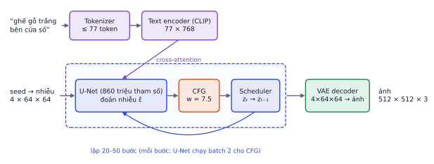
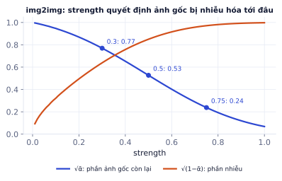

Bài 1
Kích thước latent
tính tayẢnh 512×512×3, VAE giảm 8 lần mỗi chiều, latent có 4 kênh.
Lời giải
512/8 = 64. Latent 64·64·4 = 16.384 số; ảnh 786.432 số; tỉ lệ 48. U-Net làm việc trên dữ liệu nhỏ hơn 48 lần, nên nhanh và nhẹ hơn rất nhiều.
Khử nhiễu trực tiếp trên ảnh 512×512×3 thì mỗi bước U-Net phải xử lý gần 800 nghìn con số: quá chậm và tốn bộ nhớ. Latent diffusion, nền tảng của Stable Diffusion, nén ảnh vào một không gian nhỏ hơn 48 lần bằng VAE, khử nhiễu ở đó, rồi giải nén ra ảnh. Bài này mổ xẻ từng thành phần của Stable Diffusion (kích thước đã đếm bằng diffusers), và phần thực hành bạn tự viết vòng lặp sinh ảnh thay cho hàm pipeline() một dòng.
Khách hàng không hỏi "DDPM là gì" mà hỏi "vì sao sinh ảnh mất 5 giây, GPU 8 GB có chạy được không, ảnh 1024 có được không". Trả lời được cần hiểu ảnh đi qua những thành phần nào, mỗi thành phần tốn bao nhiêu. Đây cũng là bài nền cho LoRA (P5.5) và app tạo ảnh (P5.7).
Ảnh 512×512 màu có 512 · 512 · 3 = 786.432 con số. Phần lớn trong số đó là chi tiết vi mô (nhiễu hạt, biến thiên màu nhỏ) mà mắt người gần như không thấy. Khử nhiễu trên pixel bắt U-Net tốn công cho những chi tiết đó ở mọi bước.
Chi phí còn tệ hơn với attention: số phần tử ma trận self-attention tăng theo bình phương số vị trí. Ở độ phân giải 512×512 là 262.144 vị trí, ma trận attention có khoảng 68,7 tỉ phần tử, không GPU nào chứa nổi. Ở 64×64 chỉ là 4096 vị trí, khoảng 16,8 triệu phần tử.
Ý tưởng latent diffusion (Rombach và cộng sự, 2022): tách hai việc.
Autoencoder gồm encoder nén ảnh và decoder dựng lại ảnh, train để ảnh dựng lại giống ảnh gốc. VAE (variational autoencoder) thêm một ràng buộc nhỏ (KL) để latent không có những vùng "trống" kỳ quặc, nhờ đó latent trơn tru và thêm nhiễu vào vẫn có nghĩa.
Với Stable Diffusion 1.5:
ảnh 512×512×3 ──encoder──▶ latent 4×64×64 ──decoder──▶ ảnh 512×512×3
(giảm 8 lần mỗi chiều cạnh, 4 kênh)
Ảnh 1024×1024 (SDXL):
VAE không chỉ là phép nén thông thường như JPEG: latent mang ý nghĩa "vùng này là cạnh gỗ, vùng kia là nền sáng", nên U-Net làm việc với khái niệm, không phải pixel lẻ.
Latent ra từ VAE có phương sai khoảng 30, không phải 1. Lịch nhiễu giả định dữ liệu có phương sai khoảng 1 (P5.1), nên latent được nhân với vae.config.scaling_factor = 0.18215 trước khi đưa vào diffusion, và chia lại trước khi giải mã.
Quên chia scaling factor khi decode (hoặc quên nhân khi encode ở img2img) cho ảnh toàn màu bệt, tương phản cực mạnh hoặc xám đặc. Đây là lỗi phổ biến nhất khi tự viết vòng lặp. SDXL dùng hệ số khác (0.13025): luôn đọc từ vae.config, đừng chép cứng.

| Thành phần | Vai trò | SD 1.5 |
|---|---|---|
| Tokenizer | prompt → tối đa 77 token id | CLIP tokenizer (BPE) |
| Text encoder | token id → 77 vector ngữ nghĩa | CLIP ViT-L/14 phần văn bản, khoảng 123 triệu tham số, 768 chiều |
| U-Net | đoán nhiễu trên latent, đọc văn bản qua cross-attention | 859,5 triệu tham số, kênh 320/640/1280/1280 |
| Scheduler | quy tắc cập nhật latent mỗi bước | DDIM, DPM-Solver++, Euler… (không có tham số học) |
| VAE | encoder (img2img) và decoder | 83,65 triệu tham số |
U-Net chiếm phần lớn tham số và phần lớn thời gian, vì nó chạy 20–50 lần (nhân đôi với CFG), còn text encoder và VAE decoder chỉ chạy một lần.
Bộ nhớ trọng số ở fp16 (2 byte mỗi tham số), tính cả ba thành phần có tham số:
(859,5 + 123 + 83,65) triệu ≈ 1066 triệu tham số × 2 byte ≈ 2,13 GB.
Cộng thêm bộ nhớ cho activation lúc chạy (phụ thuộc kích thước ảnh và batch), SD 1.5 chạy thoải mái trên GPU 6–8 GB ở fp16, kể cả T4 miễn phí của Colab.
Gọi pipe(prompt) là một dòng, nhưng bên trong là đúng những gì bạn đã viết ở GĐ1–3. Tự viết lại giúp bạn sửa được khi có lỗi và thêm được tính năng mà pipeline không có sẵn.
import torch
from diffusers import StableDiffusionPipeline, DPMSolverMultistepScheduler
dev = "cuda"
pipe = StableDiffusionPipeline.from_pretrained("stable-diffusion-v1-5/stable-diffusion-v1-5",
torch_dtype=torch.float16).to(dev)
tok, te, unet, vae = pipe.tokenizer, pipe.text_encoder, pipe.unet, pipe.vae
sched = DPMSolverMultistepScheduler.from_config(pipe.scheduler.config)
@torch.no_grad()
def encode(texts):
ids = tok(texts, padding="max_length", max_length=tok.model_max_length,
truncation=True, return_tensors="pt").input_ids.to(dev)
return te(ids)[0] # (B, 77, 768)
@torch.no_grad()
def generate(prompt, negative="", steps=30, w=7.5, seed=42, h=512, wd=512):
emb = encode([negative, prompt]) # 1. nhánh không điều kiện + có điều kiện
g = torch.Generator(dev).manual_seed(seed) # 2. nhiễu ban đầu từ seed
z = torch.randn(1, 4, h // 8, wd // 8, generator=g, device=dev, dtype=torch.float16)
sched.set_timesteps(steps) # 3. chọn các bước (999, 966, 932, ...)
z = z * sched.init_noise_sigma
for t in sched.timesteps: # 4. lặp
inp = sched.scale_model_input(torch.cat([z, z]), t)
eps_u, eps_c = unet(inp, t, encoder_hidden_states=emb).sample.chunk(2)
eps = eps_u + w * (eps_c - eps_u) # CFG
z = sched.step(eps, t, z).prev_sample # scheduler cập nhật latent
img = vae.decode(z / vae.config.scaling_factor).sample # 5. giải mã
img = ((img.clamp(-1, 1) + 1) / 2)[0].permute(1, 2, 0).float().cpu().numpy()
return (img * 255).round().astype("uint8") # (512, 512, 3)
Các lời gọi set_timesteps, scale_model_input, step(...).prev_sample, vae.decode(...).sample đã chạy thử với diffusers 0.42 (dùng U-Net và VAE nhỏ khởi tạo ngẫu nhiên để kiểm tra API và shape). Với 30 bước, DPM-Solver chọn các bước 999, 966, 932, 899, …
scale_model_input và init_noise_sigma để làm gì? Một số scheduler (Euler, các bản "Karras") làm việc với latent có độ lớn khác ở mỗi bước, nên phải co giãn đầu vào cho đúng thang đo U-Net đã được train. Với DDIM và DPM-Solver hai hàm này gần như không làm gì, nhưng luôn gọi chúng để đổi scheduler mà không phải sửa vòng lặp.
| Tham số | Ảnh hưởng | Giá trị thường dùng |
|---|---|---|
| Số bước | nhiều hơn thì chi tiết hơn tới một mức, chậm tuyến tính | 20–30 với DPM-Solver++, 50 với DDIM |
| Guidance scale | bám prompt vs đa dạng (P5.3) | 7–7.5 với SD 1.5 |
| Seed | quyết định nhiễu ban đầu, tức bố cục | lưu lại để tái tạo ảnh |
| Kích thước | SD 1.5 train ở 512×512 | giữ gần 512, bội số của 8 |
| Scheduler | tốc độ hội tụ và "chất" ảnh | DPM-Solver++ là lựa chọn an toàn |
Sinh ảnh 1024×1024 bằng SD 1.5. Model chỉ thấy ảnh 512 khi train; ở 1024, mỗi vùng 512 trông như "một ảnh riêng", nên thường ra hai cái ghế, hai cửa sổ, người có hai đầu. Muốn ảnh lớn: dùng model train ở độ phân giải đó (SDXL ở 1024), hoặc sinh ở 512 rồi phóng to bằng img2img/upscaler.
Seed và tính tái tạo. Cùng seed, prompt, scheduler, số bước, kích thước, guidance và cùng phần cứng thì ra cùng ảnh. Đổi một chữ trong prompt mà giữ seed thì bố cục thường gần giống, nên seed là công cụ để so sánh công bằng (ví dụ so model gốc với model có LoRA ở P5.6).
Thay vì bắt đầu từ nhiễu thuần:

img2img với 30 bước, strength 0.5: chỉ chạy 15 bước khử nhiễu cuối, nên nhanh gấp đôi sinh từ đầu. Hệ số tín hiệu ở điểm bắt đầu khoảng 0.53: ảnh gốc vẫn chiếm phần đáng kể, kết quả giữ bố cục, đổi chất liệu và chi tiết theo prompt.
Chỉ sửa vùng bị che (mask). Ở mỗi bước, phần ngoài mask được thay bằng ảnh gốc đã thêm nhiễu đúng mức t, nên khi khử nhiễu xong, vùng ngoài giữ nguyên và vùng trong hòa hợp với nó. Model inpainting chuyên dụng còn nhận mask và ảnh gốc làm kênh đầu vào thêm (9 kênh thay vì 4), cho kết quả liền mạch hơn.
Thêm một bản sao phần encoder của U-Net, nhận điều kiện không gian (đường viền Canny, tư thế người, bản đồ độ sâu), và cộng đặc trưng của nó vào U-Net gốc qua các lớp conv khởi tạo bằng 0 (ban đầu không ảnh hưởng gì, học dần). U-Net gốc đóng băng. Rất hữu ích cho ảnh sản phẩm: giữ đúng dáng ghế từ ảnh chụp, đổi chất liệu và bối cảnh theo prompt.
Ghi nhớ: latent diffusion = VAE (nén) + diffusion trên latent + điều kiện văn bản qua cross-attention. Hiểu ba mảnh này là hiểu hầu hết model tạo ảnh hiện nay.
SDXL sinh ảnh 1024×768 với VAE giảm 8 lần mỗi cạnh, 4 kênh latent.
| Chủ đề | Ý chính |
|---|---|
| Vì sao latent | pixel quá nhiều, attention bùng nổ bình phương; latent nhỏ hơn 48 lần |
| VAE | nén 8 lần mỗi cạnh, 4 kênh; nhân/chia scaling factor |
| Năm thành phần | tokenizer, text encoder, U-Net (nặng nhất), scheduler, VAE |
| Vòng lặp | encode prompt → nhiễu từ seed → lặp U-Net + CFG + scheduler → VAE decode |
| Tham số | số bước, guidance, seed, kích thước, scheduler |
| Biến thể | img2img (strength), inpainting (mask), ControlNet (điều kiện không gian) |
| Thuật ngữ | Nghĩa |
|---|---|
| latent diffusion | diffusion trên biểu diễn nén thay vì pixel |
| VAE | variational autoencoder: encoder + decoder có ràng buộc KL |
| latent | biểu diễn nén của ảnh (4×64×64 với SD 1.5) |
| scaling factor | hệ số đưa latent về phương sai khoảng 1 |
| pipeline | bộ ghép sẵn các thành phần trong diffusers |
| scheduler | quy tắc cập nhật latent mỗi bước |
| img2img / strength | sinh từ ảnh có sẵn / mức nhiễu hóa ảnh gốc |
| inpainting / mask | sửa một vùng / vùng cần sửa |
| ControlNet | mạng phụ đưa điều kiện không gian vào U-Net |
Ảnh 512×512×3, VAE giảm 8 lần mỗi chiều, latent có 4 kênh.
512/8 = 64. Latent 64·64·4 = 16.384 số; ảnh 786.432 số; tỉ lệ 48. U-Net làm việc trên dữ liệu nhỏ hơn 48 lần, nên nhanh và nhẹ hơn rất nhiều.
U-Net có khoảng 860 triệu tham số, lưu fp16 (1 GB = 10⁹ byte). Sinh 1 ảnh, 30 bước, có CFG.
860·10⁶ × 2 byte = 1,72 GB. CFG nhân đôi: 30 bước × 2 = 60 lượt xử lý latent (thường gộp thành 30 lần chạy với batch 2). Tắt CFG (w = 1) nhanh gấp đôi nhưng ảnh kém bám đề.
Tokenizer CLIP nhận tối đa 77 token, trong đó có 1 token bắt đầu và 1 token kết thúc.
75 token cho nội dung. Prompt 90 token mất 15 token cuối: các chi tiết đặt cuối prompt dài sẽ bị bỏ qua mà không báo lỗi. Đặt thông tin quan trọng ở đầu.
Với img2img, strength = 0.3 và strength = 0.9 cho kết quả khác nhau thế nào? Giải thích bằng quá trình thêm nhiễu và khử nhiễu.
strength là tỉ lệ quãng đường nhiễu: 0.3 thêm ít nhiễu (dừng ở khoảng 30% lịch nhiễu) rồi khử nhiễu 30% số bước, nên ảnh giữ gần hết bố cục và màu của ảnh gốc, chỉ đổi chi tiết. 0.9 gần như phá hết ảnh gốc, chỉ còn bố cục mờ nhạt, ảnh mới chủ yếu theo prompt.
Viết đoạn code in ra kiến trúc của các thành phần trong một pipeline Stable Diffusion: số tham số của U-Net, text encoder, VAE; scaling factor của VAE; tên scheduler mặc định; độ dài tối đa của tokenizer.
import torch
from diffusers import StableDiffusionPipeline
pipe = StableDiffusionPipeline.from_pretrained("stable-diffusion-v1-5/stable-diffusion-v1-5", torch_dtype=torch.float16)
count = lambda m: sum(p.numel() for p in m.parameters()) / 1e6
print(f"U-Net {count(pipe.unet):.0f}M | text encoder {count(pipe.text_encoder):.0f}M | VAE {count(pipe.vae):.0f}M")
print("scaling factor:", pipe.vae.config.scaling_factor)
print("scheduler:", type(pipe.scheduler).__name__, "| max tokens:", pipe.tokenizer.model_max_length)
print("cross-attention dim:", pipe.unet.config.cross_attention_dim)
Chạy trên Colab T4. Mục tiêu: thay pipe(prompt) bằng vòng lặp của chính bạn, và chứng minh cho cùng kết quả.
Các bước
DPMSolverMultistepScheduler.encode_prompt(text) bằng tokenizer và text encoder.generate(prompt, negative, seed, steps=30, w=7.5) theo vòng lặp ở phần lý thuyết.pipe(prompt, negative_prompt=..., generator=torch.Generator("cuda").manual_seed(seed), num_inference_steps=30, guidance_scale=7.5): tính sai số pixel trung bình giữa hai ảnh.Xong khi
pipeline() (sai số trung bình rất nhỏ, mắt thường không phân biệt được).import torch
from diffusers import StableDiffusionPipeline, DPMSolverMultistepScheduler
dev = "cuda"
pipe = StableDiffusionPipeline.from_pretrained("stable-diffusion-v1-5/stable-diffusion-v1-5", torch_dtype=torch.float16).to(dev)
pipe.scheduler = DPMSolverMultistepScheduler.from_config(pipe.scheduler.config)
tok, te, unet, vae, sched = pipe.tokenizer, pipe.text_encoder, pipe.unet, pipe.vae, pipe.scheduler
@torch.no_grad()
def encode_prompt(text):
ids = tok(text, padding="max_length", max_length=tok.model_max_length, truncation=True, return_tensors="pt").input_ids.to(dev)
return te(ids)[0]
@torch.no_grad()
def generate(prompt, negative="", seed=0, steps=30, w=7.5):
emb = torch.cat([encode_prompt([negative]), encode_prompt([prompt])])
g = torch.Generator(dev).manual_seed(seed)
lat = torch.randn((1, unet.config.in_channels, 64, 64), generator=g, device=dev, dtype=torch.float16)
sched.set_timesteps(steps, device=dev)
lat = lat * sched.init_noise_sigma
for t in sched.timesteps:
inp = sched.scale_model_input(torch.cat([lat, lat]), t)
e_u, e_c = unet(inp, t, encoder_hidden_states=emb).sample.chunk(2)
lat = sched.step(e_u + w * (e_c - e_u), t, lat).prev_sample
img = vae.decode(lat / vae.config.scaling_factor).sample
return pipe.image_processor.postprocess(img, output_type="pil")[0]
prompt = "a white wooden vanity table with a round mirror, product photo, soft light"
mine = generate(prompt, seed=42)
ref = pipe(prompt, generator=torch.Generator(dev).manual_seed(42), num_inference_steps=30, guidance_scale=7.5).images[0]
import numpy as np
print("sai số pixel trung bình:", np.abs(np.asarray(mine, float) - np.asarray(ref, float)).mean())